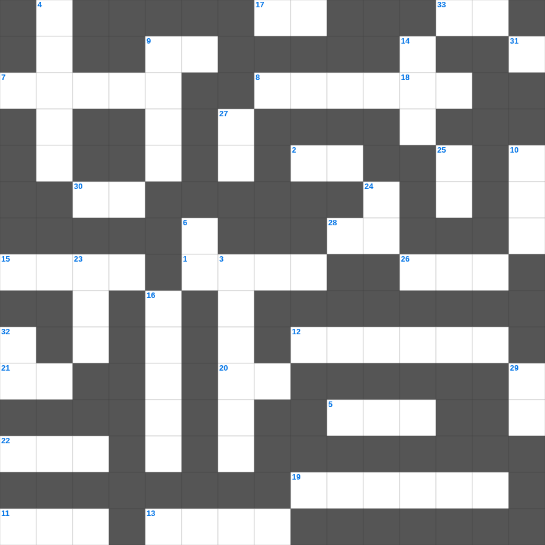

요나: 물고기 뱃속
📌 서비스 정의
십자가로세로는 교회 주보와 주일학교에서 사용할 수 있는 성경 기반 가로세로 퍼즐 서비스입니다. 성경 인물, 사건, 핵심 구절을 바탕으로 제작되었습니다. 온라인 풀이 및 인쇄 기능을 제공합니다.
📖 요나란?
요나는 니느웨로 가라는 하나님의 명령을 피해 도망친 선지자가 큰 물고기 배 속에서 회개하고, 결국 니느웨의 회개를 이끌어내는 이야기입니다.
📚 요나의 주요 사건·주제
요나의 도망과 폭풍 · 큰 물고기 배 속의 기도 · 니느웨로의 사명 수행 · 니느웨의 회개와 구원 · 요나의 불만과 하나님의 가르침
무료로 즐기는 요나 요나 무료 성경퀴즈! 35개의 힌트로 구성된 가로세로 낱말 퍼즐입니다. PC와 모바일 모두 지원되며, 정답을 바로 확인할 수 있어 혼자서도 쉽게 풀 수 있습니다.

📝 가로 힌트
1. 바울이 감옥에서 쓴 서신들
2. 베드로가 감옥에서 천사의 도움으로 나옴
5. 예수님이 십자가에 못 박히신 언덕
7. 주 앞에서 낮추라 그리하면 주께서 너희를 이것하시리라
8. 모세가 호렙산에서 본 신비한 나무
9. 성경의 맨 마지막 단어
11. 솔로몬 성전 건축에 쓰인 고급 나무
12. 고라 자손의 반역
13. 예수님이 태어나신 동네
15. 떡 다섯 개와 물고기 두 마리로 오천 명을 먹이심
17. 새 예루살렘 성곽의 첫 번째 기초석
19. 광야의 외치는 자의 음식
20. 영접하는 자 곧 그 이름을 믿는 자들에게는 하나님의 이것이 되는 권세를 주셨으니
21. 나의 이것을 너희에게 주노라
22. 예수님이 무화과나무를 저주하신 곳 근처
26. 기생 라합이 창문에 매단 표식
28. 호흡이 있는 자마다 찬양하라 이것으로
30. 예수님이 십자가에서 돌아가신 사건
33. 야곱의 사다리 환상 장소
📝 세로 힌트
3. 지붕을 뚫고 내려온 병자를 고치신 사건
4. 기브온 족속이 여호수아를 속이려 가져온 것
6. 요셉이 보디발의 아내 유혹을 물리치고 간 곳
9. 노아의 방주가 머문 산
10. 안드레의 형제
14. 광야에서 하늘에서 내려온 양식
16. 우리가 거할 영원한 집
18. 예수님이 예루살렘 입성 때 타신 것
18. 발람 선지자를 책망하며 말을 한 동물
23. 메시아의 탄생을 예언한 평화의 선지자
24. 여호와 이것: 치료하시는 하나님
25. 하나님은 영이시니 예배하는 자가 신령과 이것으로
27. 제물을 통째로 태워 드리는 제사
29. 곡물로 드리는 제사
31. 낮을 주관하게 하신 큰 광명체
32. 성령의 9가지 열매 중 세 번째
🧑🏫 교회 교육 자료 활용
이 퍼즐은 주일학교 교재 추천 자료로 활용할 수 있고, 주일학교 주보에 넣기 좋은 분량으로 구성되어 있습니다. 수업용 주일학교 교안에 활동지로 붙이거나, 예배 후 복습용 주일학교 공과교재로 바로 사용할 수 있습니다.
🏷️ 키워드
요나 무료 성경퀴즈, 요나, 십자가로세로, 성경퀴즈, 말씀퀴즈, 가로세로퍼즐, 주일학교 교재 추천, 주일학교 주보, 주일학교 교안, 주일학교 공과교재